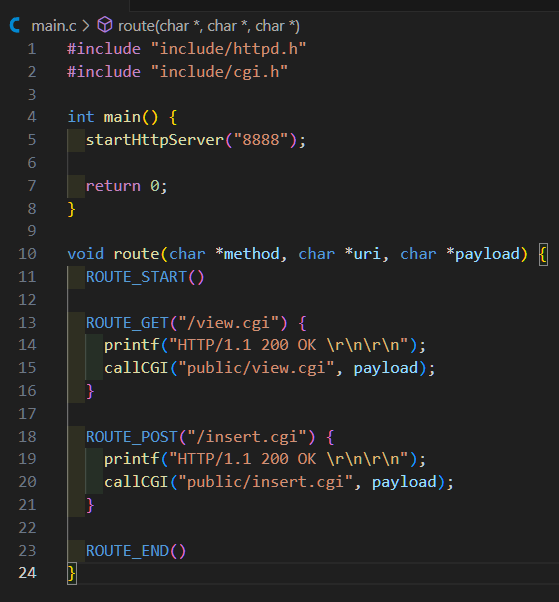
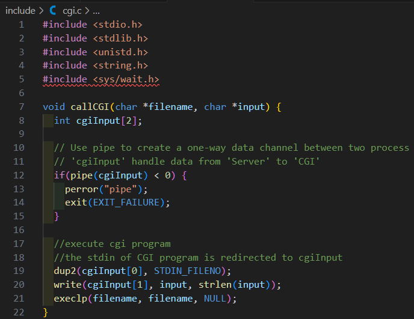
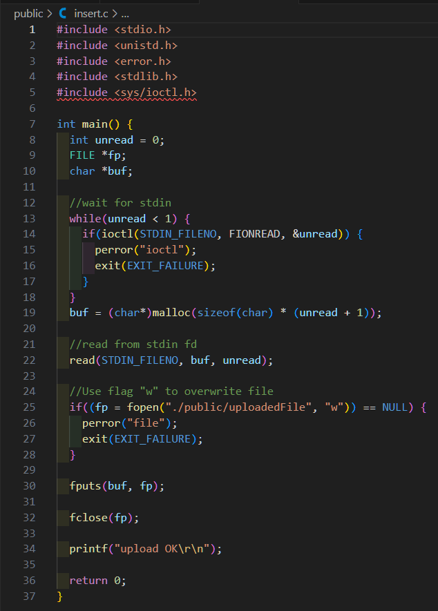
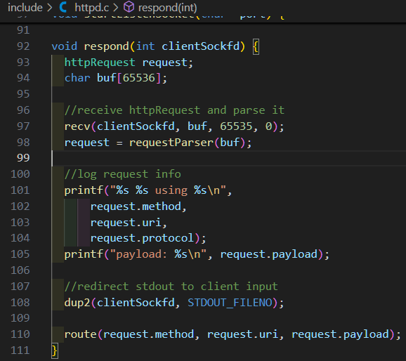
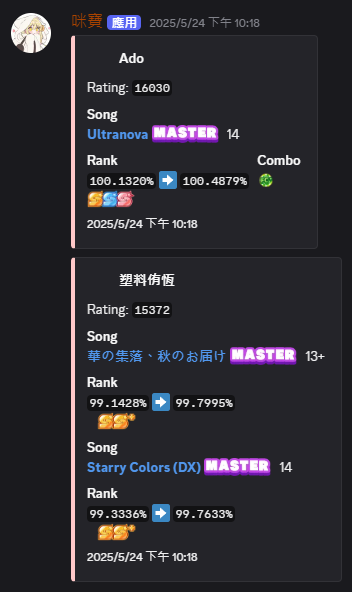
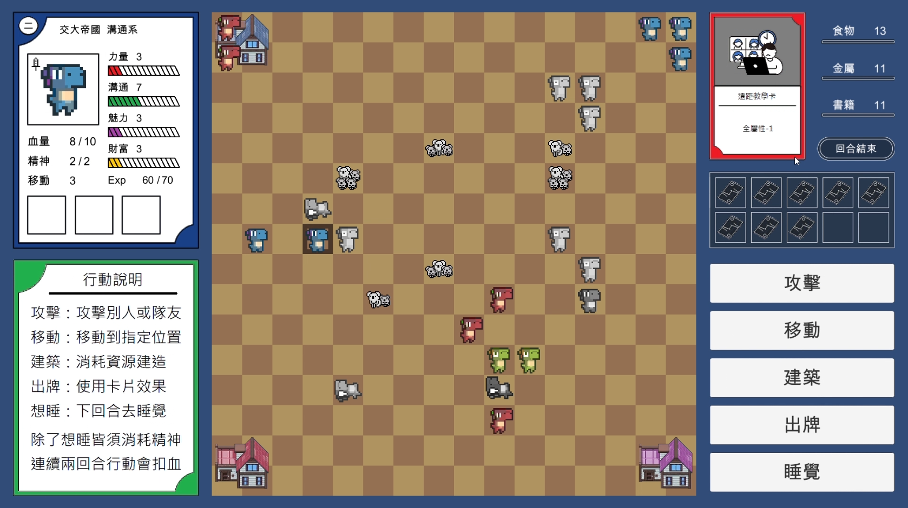

自我介紹
有 5 年的 Laravel/PHP 框架開發經驗，參與過遊戲橘子、Volvo、長榮航空、中興保全、全球人壽等大型專案開發。也是國際技能競賽 IT Network Systems Administration 的備取代表選手。
技能總覽
- 軟體開發：Laravel / Node.js / C++ / C
- 資料庫：MySQL / Redis
- 工具與試算：Git / RESTful API / Swagger / Postman
- 前端框架：Inertia.js + Vue.js
- 其他：OAuth2.0 / JWT / CSRF / Linux / Bash shell scripting / Nginx / PM2
作品
- 以 C 語言獨立開發簡易 HTTP 伺服器，支援基本的 GET 與 POST 請求處理。
- 實作 CGI 機制，能呼叫外部程式（如 view.cgi、insert.cgi）處理動態內容。
- 具備路由功能，可依據不同 URI 與 HTTP method 執行對應邏輯。
- 支援檔案上傳（/insert.cgi）與檔案檢視（/view.cgi），並進行基礎錯誤處理。
- 採用多檔案分工設計，主程式、HTTP 處理、CGI 處理分離，提升維護性。
- 使用 Makefile 管理專案編譯流程，方便專案建置與部署。
- 所有功能皆以純 C 語言與標準函式庫實現，無需額外第三方套件。




- 使用 Node.js 與 discord.js 快速整合 Discord Bot 功能。
- 採用 ES Modules 與 Promise/async/await 提升程式可維護性。
- 利用 axios 與 cheerio 進行網頁爬蟲，定時爬取遊戲官網玩家成績，並以 Discord embed 格式推播至指定頻道。
- 支援自訂推播頻道與多種成就、評價圖示。
- 模組化設計，方便擴充新遊戲或功能。
- 支援多帳號與多頻道推播，提升彈性與使用者體驗。
- Discord 指令式互動，動態載入指令模組，提供歌曲資料庫查詢與隨機推薦等指令功能。

- 採用 Unity 遊戲引擎開發 2D 回合制戰棋遊戲，實現角色動畫與場景互動。
- 以 C# 撰寫遊戲核心邏輯，包括角色控制、卡牌系統、血量與分數管理。
- 模組化設計遊戲架構，將角色、卡牌、UI 等功能分離，方便維護與擴充。
- 設計資料驅動的職業與卡牌系統，支援多職業、多卡牌組合與平衡調整。
- 自訂 UI 元件，包含血條、卡牌列表顯示與勝負提示，提升玩家體驗。
- 使用 Git 進行版本控制，支援多人協作與分支開發流程。
- 撰寫技術文件與專案說明，協助團隊溝通與後續維護。

專案經歷
- 公司內部使用的管理平台，整合 Line Ads、Meta Marketing、Google Ads 等等平台的數據。
- 可創建 Report Schedule 來定期下載每日報表，也可直接即時抓取 Report 內容，可篩選媒體平台、廣告帳號、受眾、素材等等
- 模組化設計報表類型，使用 Strategy pattern 來實作與管理報表類型，方便日後擴充
- 使用 Cache 加速各媒體平台報表 API 資料獲取的速度
- 帳號階層式管理，上層帳號可看到下層帳號所有的 Report 資料以及下載等活動紀錄，並分派各帳號的廣告權限。
- 公司內部使用的管理平台，讓業務可以快速追蹤潛客的接觸情形、購車意願、試車狀況以及下單訂購等功能。
- 模組化商業模塊，使用 Action pattern 來封裝各個商業邏輯，使可讀性和結構更清晰
- 2C 的抽獎活動系統，透過完成任務來獲得抽獎機會，每日都有限制獎品最大抽出數量。
- 後端以 Laravel + MySQL 架構，實現 RESTful API 串接。
- 優化資料庫查詢與上鎖機制，提升系統效能、原子性與一致性。
- 設計並開發完整的認證系統，支援發送認證請求、認證狀態、管理用戶管理與權限控管。
- 使用 Laravel + Inertia.js + Vue.js 建構單頁應用，使其不用額外開 API 就能讓前後端溝通。
- 使用 Laravel Policies + laravel-permission 套件，實現細緻的權限管理
- 整合 Laravel Queues 處理背景任務，用戶提交認證請求後可立即做其他操作，無需等待
- 透過 OAuth2.0 串接內部帳號驗證系統，實現統一帳號管理
- 獨立開發 Radius 認證伺服器管理後台，支援用戶帳號、群組、權限等功能。
- 前台透過介面來管理帳號目前所允許的設備 MAC-address 列表。
- 後台透過 CRM 介面來設定用戶的最大 MAC-address 設備使用量，支援群組來設定用量。
- 使用套件 Filament，加速前端 CRM 開發。
- 實作 Radius 認證日誌查詢、即時帳號管理與多條件搜尋。
競賽經歷
- 45th WorldSkills Competition, IT Network Systems Administration - National Representative Alternate
- 華佗杯 CCNA R&S – 第一名